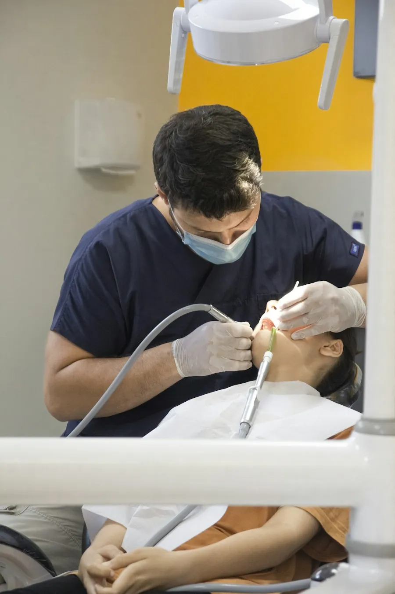

InícioTratamentosCanal
Tratamento de canal para tentar salvar o seu dente
Quando a cárie ou uma pancada chegam ao nervo, o canal limpa o interior do dente e evita, sempre que possível, a extração.
Agendar avaliação
Urgência com dor atendida no mesmo dia
O que é
Tratar o nervo e manter o dente
Dentro de cada dente existe a polpa, o “nervo”, com vasos e terminações nervosas. Quando ela inflama ou infecciona, aparece a dor forte, a sensibilidade ao quente e, às vezes, o inchaço.
No tratamento de canal, a polpa doente é removida, o interior do dente é limpo e desinfetado e os canais são preenchidos e selados. O dente continua na boca, firme, sem o nervo.
Os canais da Lumi são feitos pelo Dr. Rafael Toledo, que atende também as urgências com dor. Na maioria dos casos o tratamento termina em uma sessão.
Para quem é
Quando indicamos
Quem decide é a avaliação, olhando a sua boca e as suas radiografias. Estes são os casos mais comuns.
- Dor forte e latejantePrincipalmente à noite ou ao deitar, que não passa com analgésico comum.
- Sensibilidade que demora a passarDor com quente ou frio que continua por minutos depois do gole.
- Inchaço ou bolinha na gengivaSinal de infecção na ponta da raiz, que precisa de atenção logo.
- Dente escurecido ou que levou pancadaMesmo sem dor, o nervo pode ter sido afetado e o raio-x mostra.
Nem todo dente pode ser salvo. Se a raiz estiver fraturada ou sem estrutura para uma restauração, explicamos as alternativas, com raio-x, antes de qualquer decisão.
Como é feito
As etapas, uma a uma
- Diagnóstico
Exame, testes de sensibilidade e raio-x digital. A dor é aliviada já nesta consulta.
- Anestesia e isolamento
Anestesia local e um lençol de borracha que protege o dente da saliva durante o tratamento.
- Limpeza dos canais
A polpa doente é removida e os canais são limpos e desinfetados com instrumentos próprios.
- Selamento
Os canais são preenchidos e o dente recebe um curativo ou a restauração.
- Restauração final
Dentes muito destruídos recebem uma coroa para não quebrar com a mastigação.
- Controle
Raio-x de controle nas revisões para acompanhar a cicatrização.
1 sessãona maioria dos casos
60 a 90 minpor sessão
1 a 3 diasde sensibilidade leve ao mastigar
Convênio ou particular
Como fica com o seu plano
O canal é coberto pela maioria dos planos da nossa lista, com autorização prévia da operadora. A recepção faz o pedido depois da avaliação.
Particular, o valor depende do caso e é passado por escrito depois da avaliação, antes de começar.
Dúvidas
Perguntas frequentes
Não achou a sua dúvida? Mande no WhatsApp: quem responde é a equipe da clínica, em horário comercial.
Canal dói?
O tratamento é feito com anestesia local, e o objetivo dele é justamente tirar a dor. Nos dias seguintes pode ficar uma sensibilidade leve ao morder, que passa sozinha ou com analgésico comum.
É melhor tirar o dente?
Quase sempre manter o dente natural é a melhor opção para a mastigação e para os dentes vizinhos. Quando a extração é inevitável, explicamos as opções de reposição.
Estou com dor agora. Vocês atendem hoje?
Ligue ou mande mensagem para a recepção. A dor tem prioridade na agenda e é encaixada sempre que possível no mesmo dia, dentro do horário de atendimento.
Preciso de coroa depois do canal?
Depende de quanto o dente perdeu. Dentes de trás muito destruídos costumam precisar de coroa para não fraturar.
O convênio cobre canal?
O canal é coberto pela maioria dos planos da nossa lista, com autorização prévia da operadora. A recepção faz o pedido depois da avaliação.
Agende
Vamos olhar o seu caso com calma?
A primeira consulta é uma avaliação: conversa, exame e radiografia quando indicada. Você sai com o plano por escrito, sabendo o que o seu convênio cobre.